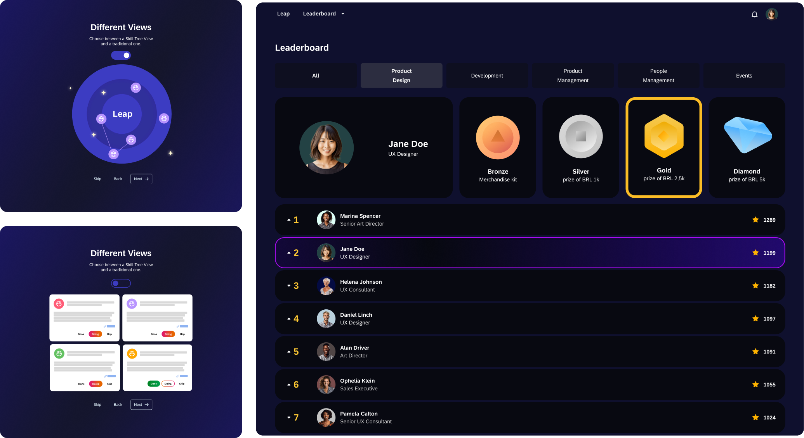
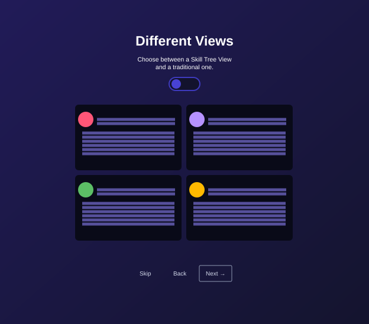
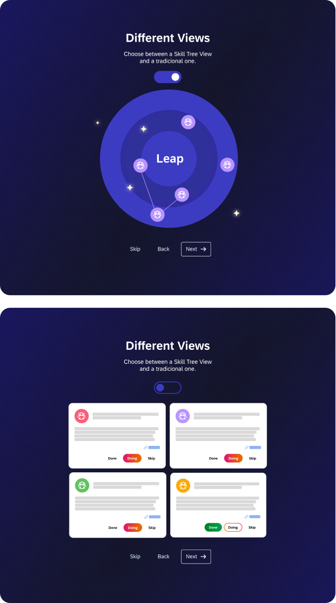
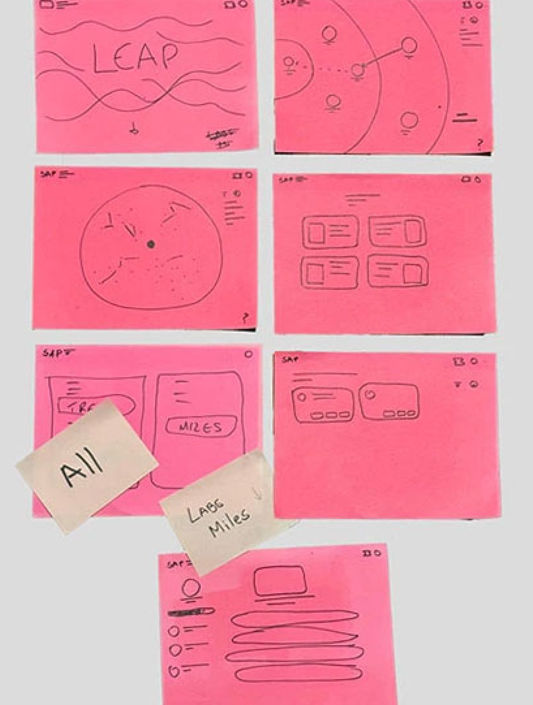
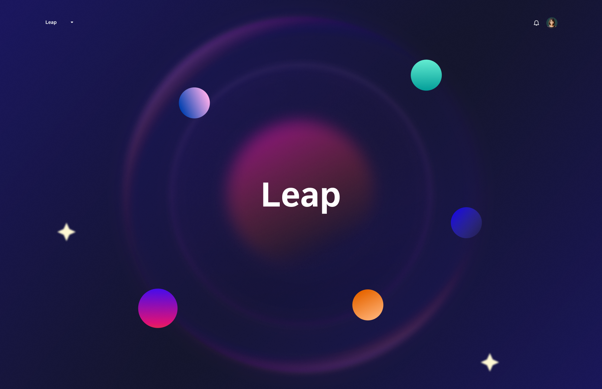
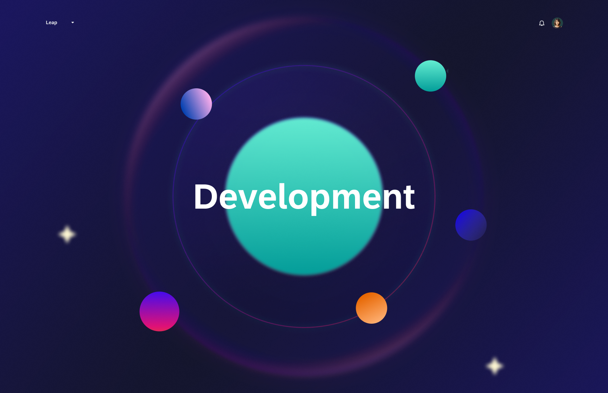
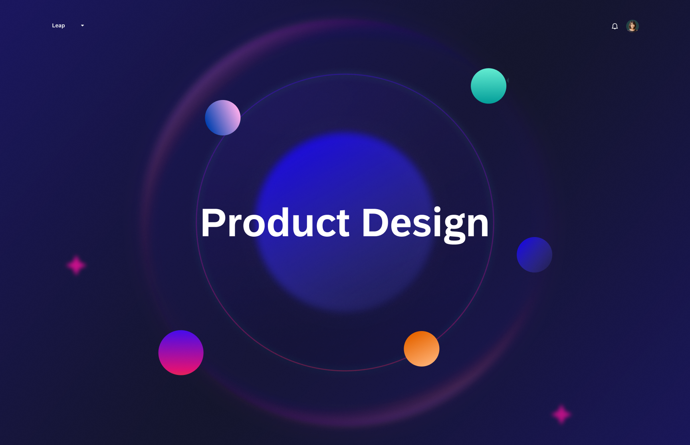
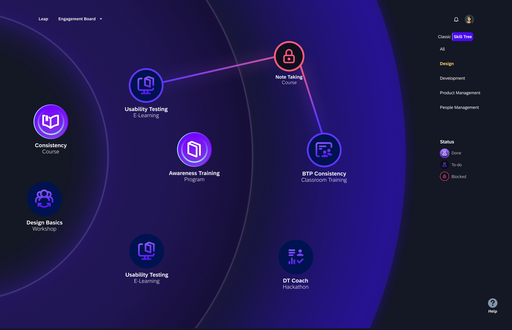
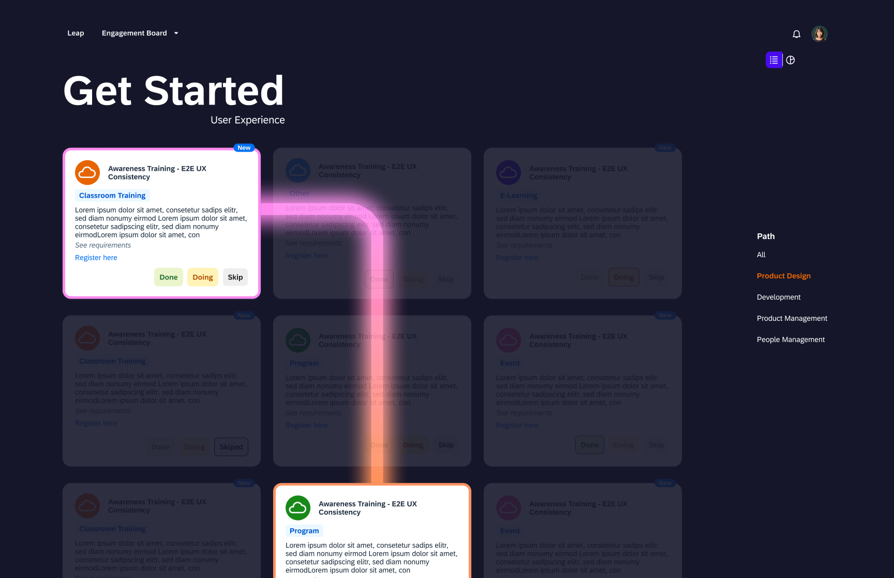
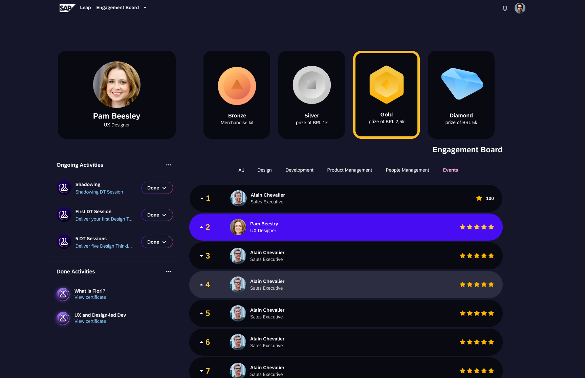

Leap: What if your career felt like a universe?
SAP Brazil's innovation team handed me a brief with one unusual instruction: don't make it look like SAP. Make it feel like a game. This is what happened when I took that seriously.



The Brief
The innovation team gave me permission to be weird
SAP Brazil had a retention problem hiding inside an engagement problem. Early-career employees — people in their first two years — were checking in, completing onboarding, and quietly disengaging. The learning platform existed. People just didn't open it.
The brief arrived framed as a "visual impact challenge." The direction was unusually direct: no corporate dashboards, no SAP blue, no defaults. The reference point they handed me was video games — specifically, skill trees. The feeling that you can see where you are, trace a path forward, and feel the pull of what's just out of reach. That was it. I found it equal parts terrifying and exciting.
"No SAP blue. No comfort zone. Make it feel like a game."
In a company with a strict design language, being told to ignore it is rarer than it sounds. I took the brief literally — and then went a step further.
Research
Fifteen conversations before touching the interface
The audience was specific: SAP Brazil employees in their first two years. A group with a very particular kind of anxiety — eager to grow, uncertain about where to start, and quick to disengage if the tool doesn't respect their time. I needed to understand them before designing anything.
I ran 15 interviews across 5 rounds, three participants at a time, iterating the design between each round. Every session tested three things: could people identify a task by type, could they trace what was blocking their progress, and could they switch views without thinking about it. A lot changed between round one and round five. The prerequisite logic, the blocked states, the view toggle — none of those were right the first time.
5 rounds of iterative testing
3 participants per round, each session informing the next. The design was actively changing between interviews — which is how it should be. Round one and round five looked nothing alike.
3 core usability tasks
Identify a Program-type task. Find the prerequisites of a blocked task. Switch to card view. Simple on paper, revealing in practice. Watching someone navigate a design you made is genuinely humbling.
Measuring what mattered
Success rates, completion time, click counts, and qualitative notes. The numbers told me what was failing. The notes told me why.
Developer interviews
Early sessions with the dev team to understand technical constraints before committing to anything visually ambitious. The last thing I wanted was a concept that couldn't ship.

The Concept
The skill tree became a solar system
During early ideation I kept circling one question: what does it feel like to be new somewhere? You're orbiting. You don't quite know where you belong yet. You're drawn toward certain things without fully understanding why. I stopped trying to build a skill tree and started building a universe.
Career tracks became planets — Development, Product Design, People Management — orbiting a central hub called Leap. You don't climb a ladder. You explore. You choose which planet to land on. It was the kind of metaphor that either lands completely or feels silly. I believe it landed.



Key Discovery
Two views, one tool — research found it, I didn't plan it
Usability testing surfaced something I hadn't designed for: a split in how people wanted to move through the platform. Some users wanted the orbital map — the full picture, their progress, where they'd been and where they could go. Others just wanted a list of things to do. They didn't care about the metaphor; they wanted to get started.
The toggle between Map view and Card view wasn't in the original brief. Research found it. It's one of the cleaner examples I have of a design decision that came entirely from watching real people use the thing — not from a hypothesis I'd already committed to.


Design Decisions
The choices worth explaining
Because "climbing" isn't how it feels to be early in your career
Skill trees imply hierarchy and sequence. But early-career development is more exploratory than that — you're orbiting things, getting closer or pulling away. The solar system metaphor gave me a visual language for choice and gravity rather than steps and requirements. Each career track became a planet with its own colour and weight. You choose where to land.
Because "blocked" should feel like information, not rejection
The skill map shows a full prerequisite chain — a visual path back to what you need to complete before a task unlocks. The locked state uses a clear lock icon, but it's never a dead end. You can always trace back to what's next. The goal was to make blockers navigable, not discouraging. Testing confirmed this: once users saw the chain, they didn't feel stuck — they felt oriented.
Because engagement is the product — not the content
The learning content existed before Leap. The problem was that no one was using it. So the design had to create reasons to return — not just reasons to start. Badges with real prize thresholds (Bronze → Silver → Gold → Diamond), a live Engagement Board leaderboard filtered by track, and activity tracking showing exactly what you've done and what's in flight. Social motivation stacked with personal achievement. Multiple hooks, not one.

What happened after
Four years later, it's still running
I don't have a percentage to show you. What I have is a product that shipped, survived, and is still onboarding new users at SAP Brazil four years after it launched. For an internal innovation initiative — with no external mandate, no commercial pressure to keep it alive — that's not a given. Survival is the metric.
The brief asked me to break the mold. The platform is still the proof that it was worth it. If I could go back, I'd push the gamification layer even further — the badge system had more room to breathe — and I'd spend more time on the mobile experience. But the core concept held. The solar system held. People kept coming back.